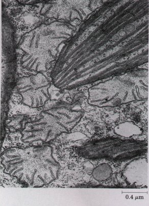
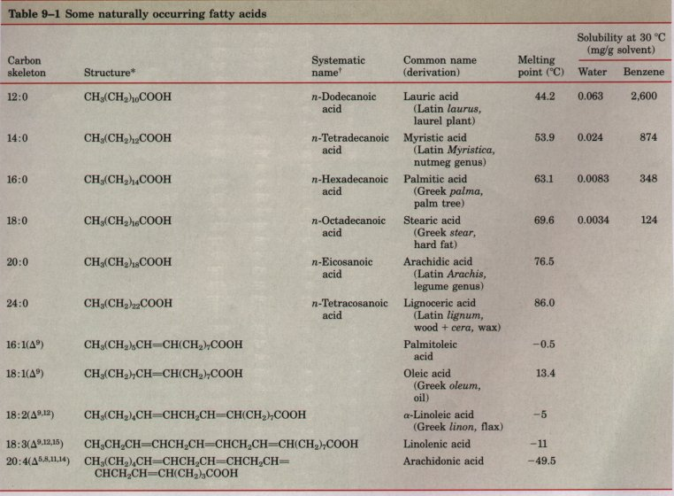
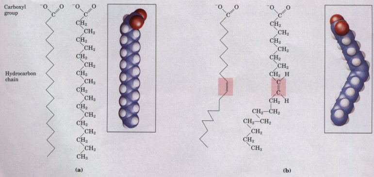
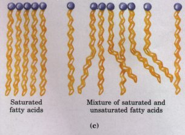
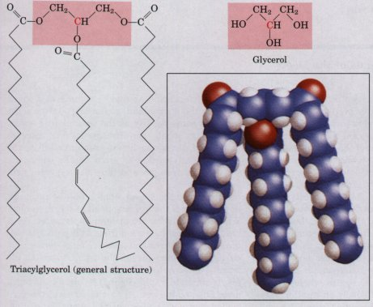
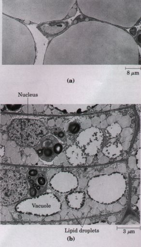
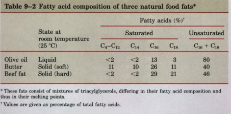
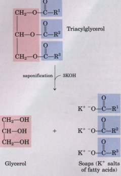
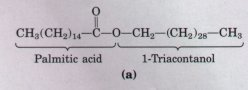
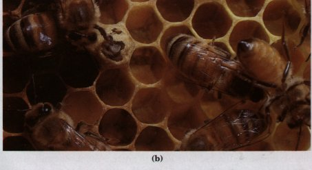

Biological lipids are a chemically diverse group of compounds, the common and defining feature of which is their insolubility in water. The biological functions of the lipids are equally diverse. Fats and oils are the principal stored forms of energy in many organisms, and phospholipids and sterols make up about half the mass of biological membranes. Other lipids, although present in relatively small quantities, play crucial roles as enzyme cofactors, electron carriers, light-absorbing pigments, hydrophobic anchors, emulsifying agents, hormones, and intracellular messengers. This chapter introduces representative lipids of each type, with emphasis on their chemical structure and physical properties.
| The fats and oils used almost
universally as stored forms of energy in living organisms
are highly reduced compounds, derivatives of fatty acids.
The fatty acids are hydrocarbon derivatives, at about the
same low oxidation state (that is, as highly reduced) as
the hydrocarbons in fossil fuels. The complete oxidation
of fatty acids (to CO2 and H2O) in cells, like the
explosive oxidation of fossil fuels in internal
combustion engines, is highly exergonic. We will introduce here the structure and nomenclature of the fatty acids most commonly found in living organisms. 'Iwo types of fatty acid-containing compounds, triacylglycerols and waxes, are described to illustrate the diversity of structure and physical properties in this family of compounds. |
 Lipids play an important role in cell structure and function. In this electron micrograph of the cytoplasm of the photosynthetic alga Euglena, the lipid-containing membranes of a chloroplast (upper right) and several mitochondria (surrounding the chloroplast and lower left) are visible. Tvvo lipid droplets, stores of chemical energy, can be seen in the chloroplast. The gray oval structure at the lower right is a lipid-filled inclusion in the cytoplasm. |

* All acids are shown in their un-ionized form. At pH 7, all free fatty acids have an ionized carboxylate. Note that numbering of carbon atoms begins at the carboxyl group carbon. t The prefix n- indicates the "normal" unbranched structure. For instance, "dodecanoic" simply indicates 12 carbon atoms, which could be arranged in a variety of branched forms. Thus "n-dodecanoic" specifies the linear, unbranched form.
Fatty acids are carboxylic acids with hydrocarbon chains of 4 to 36 carbons. In some fatty acids, this chain is fully saturated (contains no double bonds) and unbranched; others contain one or more double bonds (Table 9-1). A few contain three-carbon rings or hydroxyl groups. A simplified nomenclature for these compounds specifies the chain length and number of double bonds, separated by a colon; the 16-carbon saturated palmitic acid is abbreviated 16:0, and the 18carbon oleic acid, with one double bond, is 18:1. The positions of any double bonds are specified by superscript numbers following Δ(delta); a 20-carbon fatty acid with one double bond between C-9 and C-10 (C-1being the carboxyl carbon), and another between C-12 and C-13, is designated 20:2(Δ9'12), for example. The most commonly occurring fatty acids have even numbers of carbon atoms in an unbranched chain of 12 to 24 carbons (Table 9-1). As we shall see in Chapter 20, the even number of carbons results from the mode of synthesis of these compounds, which involves condensation of acetate (two-carbon) units
The position of double bonds is also regular; in most monounsaturated fatty acids the double bond is between C-9 and C-10 (Δ9), and the other double bonds of polyunsaturated fatty acids are generally Δ12 and Δ15 (Table 9-1). The double bonds of polyunsaturated fatty acids are almost never conjugated (alternating single and double bonds, as in -CH=CH-CH=CH-), but are separated by a methylene group (-CH=CH-CH2-CH=CH-). The double bonds of almost all naturally occurring unsaturated fatty acids are in the cis configuration.

| The physical properties of the fatty acids, and of compounds that contain them, are largely determined by the length and degree of unsaturation of the hydrocarbon chain. The nonpolar hydrocarbon chain accounts for the poor solubility of fatty acids in water. Lauric acid (12:0, Mr 200), for example, has a solubility of 0.063 mg/g of watermuch less than that of glucose (Mr 180), which is 1,100 mg/g of water. The longer the fatty acyl chain and the fewer the double bonds, the lower the solubility in water (Table 9-1). The carboxylic acid group is polar (and ionized at neutral pH), and accounts for the slight solubility of short-chain fatty acids in water. |  Figure 9-1 The packing of fatty acids depends nn their degree of saturation. (a) Stearic ac~d istearate at pH 71 is shown in its usual extended conformation. (b) The cis double bond Ishaded) in oleic acid loleate) does not permit rotation and introduces a rigid bend in the hydrocarbon tail. All the other bonds are free to rotate. (c) Fully saturated fatty acids in the extended form pack into nearly crystalline arrays, stabilized by many hydrophobic interactions. The presence of one or more cis double bonds interferes with this tight packing, and results in less stable aggregates. |
The melting points of fatty acids and of compounds that contain them are also strongly influenced by the length and degree of unsaturation of the hydrocarbon chain (Table 9-1). At room temperature (25 °C), the saturated fatty acids from 12:0 to 24:0 have a waxy consistency, whereas unsaturated fatty acids of these lengths are oily liquids. In the fully saturated compounds, free rotation around each of the carbon-carbon bonds gives the hydrocarbon chain great flexibility; the most stable conformation is this fully extended form ( Fig. 9-la ), in which the steric hindrance of neighboring atoms is minimized. These molecules can pack together tightly in nearly crystalline arrays, with atoms all along their lengths in van der Waals contact with the atoms of neighboring molecules (Fig. 9-le). A cis double bond forces a kink in the hydrocarbon chain (Fig. 9-lb). Fatty acids with one or several such ki.nks cannot pack together as tightly as fully saturated fatty acids (Fig. 9-lc), and their interactions with each other are therefore weaker. Because it takes less thermal energy to disorder these poorly ordered arrays of unsaturated fatty acids, they have lower melting points than saturated fatty acids of the same chain length (Table 9-1).
In vertebrate animals, free fatty acids ( having a free carboxylate group) circulate in the blood bound to a protein carrier, serum albumin. However, fatty acids are present mostly as carboxylic acid derivatives such as esters or amides. Lacking the charged carboxylate group, these fatty acid derivatives are generally even less soluble in water than are the free carboxylic acids.
| The simplest lipids constructed from fatty acids are the triacylglycerols, also referred to as triglycerides, fats, or neutral fats. l~iacylglycerols are composed of three fatty acids each in ester linkage with a single glycerol (Fig. 9-2). Those containing the same kind of fatty acid in all three positions are called simple triacylglycerols, and are named after the fatty acid they contain. Simple triacylglycerols of 16:0, 18:0, and 18: l, for example, are tristearin, tripalmitin, and triolein, respectively. Mixed triacylglycerols contain two or more different fatty acids; to name these compounds unambiguously, the name and position of each fatty acid must be specified. |  Figure 9-2 Glycerol and triacylglycerols. The triacylglycerol shown here has identical fatty acids (palmitate, 18:0) in positions 1 and 3. When there are two different fatty acids in positions 1 and 3 of the glycerol, C-2 (in red) of glycerol (shaded) becomes a chiral center (see Fig. 3-9). Biological triacylglycerols have the L configuration |
Because the polar hydroxyls of glycerol and the polar carboxylates of the fatty acids are bound in ester linkages, triacylglycerols are nonpolar, hydrophobic molecules, essentially insoluble in water. This explains why oil-water mixtures (oil-and-vinegar salad dressing, for example) have two phases. Because lipids have lower specific gravities than water, the oil floats on the aqueous phase.
| In most eukaryotic cells,
triacylglycerols form a separate phase of microscopic,
oily droplets in the aqueous cytosol, serving as depots
of metabolic fuel. Specialized cells in vertebrate
animals, called adipocytes, or fat cells, store large
amounts of triacylglycerols as fat droplets, which nearly
fill the cell (Fig. 9-3). Triacylglycerols are also
stored in the seeds of many types of plants, providing
energy and biosynthetic precursors when seed germination
occurs. As stored fuels, triacylglycerols have two significant advantages over polysaccharides such as glycogen and starch. The carbon atoms of fatty acids are more reduced than those of sugars, and oxidation of triacylglycerols yields more than twice as much energy, gram for gram, as that of carbohydrates. Furthermore, because triacylglycerols are hydrophobic and therefore unhydrated, the organism that carries fat as fuel does not have to carry the extra weight of water of hydration that is associated with stored polysaccharides. In humans, fat tissue, which is composed primarily of adipocytes, occurs under the skin, in the abdominal cavity, and in the mammary glands. Obese people may have 15 or 20 kg of triacylglycerols deposited in their adipocytes, sufficient to supply energy needs for months. In contrast, the human body can store less than a day's energy supply in the form of glycogen. Carbohydrates such as glucose and glycogen do offer certain advantages as quick sources of metabolic energy, one of which is their ready solubility in water. |
 Figure 9-3 Fat stores in cells. (a) Cross-section of four guinea pig adipocytes, showing huge fat droplets that virtually fill the cells. Also visible are several capillaries in cross-section. (b) 'hvo cambial cells from the underground stem of the plant Isoetes muricata, a quillwort. In winter, these cells store fats as lipid droplets. |
BOX 9-1 Sperm Whales: Fatheads of the Deep
The probable biological function of spermaceti oil has been deduced from research on the anatomy and feeding behavior of the sperm whale. These mammals feed almost exclusively on squid in very deep water. In their feeding dives they descend 1,000 m or more; the record dive is 3,000 m (almost 2 miles). At these depths the sperm whale has no competitors for the very plentiful squid. The sperm whale rests quietly, waiting for schools of squid to pass. For a marine animal to remain at a given depth, without a constant swimming effort, it must have the same density as the surrounding water. The sperm whale can change its buoyancy to match the density of its surroundings-from the tropical ocean surface to great depths where the water is much colder and thus has a greater density. The key to the sperm whale's ability to change its buoyancy is the freezing point of spermaceti oil. When the temperature of liquid spermaceti oil is lowered several degrees during a deep dive, it congeals or crystallizes and becomes more dense, thus changing the buoyancy of the whale to match the density of seawater. Various physiological mechanisms promote rapid cooling of the oil during a dive. During the return to the surface, the congealed spermaceti oil is warmed again and melted, decreasing its density to match that of the surface water. Thus we see in the sperm whale a remarkable anatomical and biochemical adaptation, perfected by evolution. The triacylglycerols synthesized by the sperm whale contain fatty acids of the necessary chain length and degree of unsaturation to give the spermaceti oil the proper melting point for the animal's diving habits. Unfortunately for the sperm whale population, spermaceti oil is commercially valuable as a lubricant. Several centuries of intensive hunting of these mammals have depleted the world's population of sperm whales. |
In some animals, triacylglycerols stored under the skin serve not only as energy stores but as insulation against very low temperatures. Seals, walruses, penguins, and other warm-blooded polar animals are amply padded with triacylglycerols. In hibernating animals (bears, for example) the huge fat reserves accumulated before hibernation also serve as energy stores (see Box 16-1). The low density of triacylglycerols is the basis for another remarkable function of these compounds. In sperm whales, a store of triacylglycerols allows the animals to match the buoyancy of their bodies to that of their surroundings during deep dives in cold water (Box 9-1).
| Most natural fats, such as those in vegetable oils, dairy products, and animal fat, are complex mixtures of simple and mixed triacylglycerols. These contain a variety of fatty acids differing in chain length and degree of saturation (Table 9-2). Vegetable oils such as corn and olive oil are composed largely of triacylglycerols with unsaturated fatty acids, and thus are liquids at room temperature. They are converted industrially into solid fats by catalytic hydrogenation, which reduces some of their double bonds to single bonds. Triacylglycerols containing only saturated fatty acids, such as tristearin, the major component of beef fat, are white, greasy solids at room temperature. |  * These fats consist of mixtures of triacylglycerols, differing in their fatty acid composition and thus in their melting points. ' Values are given as percentage of total fatty acids. |
When lipid-rich foods are exposed too long to the oxygen in air, they may spoil and become rancid. The unpleasant taste and smell associated with rancidity result from the oxidative cleavage of the double bonds in unsaturated fatty acids to produce aldehydes and carboxylic acids of shorter chain length and therefore higher volatility.
| The ester linkages of triacylglycerols
are susceptible to hydrolysis by either acid or alkali.
Heating animal fats with NaOH or KOH produces glycerol
and the Na + or K+ salts of the fatty acids, known as
soaps (Fig. 9-4). The usefulness of soaps is in their
ability to solubilize or disperse water-insoluble
materials by forming microscopic aggregates (micelles).
When used in "hard" water (having high
concentrations of Ca2+ and Mg2+ ), soaps are converted
into their insoluble calcium or magnesium salts, forming
a residue. Synthetic detergents such as sodium
dodecylsulfate (SDS; see p. 141) are less prone to
precipitation in hard water, and have largely replaced
natural soaps in many industrial applications. At neutral pH, a variety of lipases catalyze the enzymatic hydrolysis of triacylglycerols. Lipases in the intestine aid in the digestion and absorption of dietary fats. Adipocytes and germinating seeds contain lipases that break down stored triacylglycerols, releasing fatty acids for export to other tissues where they are required as fuel |
 Figure 9-4 Triacylglycerol breakdown by alkaline hydrolysis: the process of saponification. Rl, R2, R3 represent long alkyl chains. Household soap is made by hydrolyzing a mixture of triacylglycerols (animal fat, for example) with KOH. The K+ salts of the fatty acids are collected, washed free of KOH, and pressed into cakes. |
Biological waxes are esters of long-chain saturated and unsaturated fatty acids (having 14 to 36 carbon atoms) with long-chain alcohols (having 16 to 30 carbon atoms) (Fig. 9-5). Their melting points (60 to 100 °C) are generally higher than those of triacylglycerols. In marine organisms that constitute the plankton, waxes are the chief storage form of metabolic fuel.
| Waxes also serve a diversity of other
functions in nature, related to their water-repellent
properties and their firm consistency. Certain skin
glands of vertebrates secrete waxes to protect the hair
and skin and to keep them pliable, lubricated, and
waterproof. Birds, particularly waterfowl, secrete waxes
from their preen glands to make their feathers
water-repellent. The shiny leaves of holly,
rhododendrons, poison ivy, and many tropical plants are
coated with a layer of waxes, which protects against
parasites and prevents excessive evaporation of water. Biological waxes find a variety of applications in the pharmaceutical, cosmetic, and other industries. Lanolin (from lamb's wool), beeswax (Fig. 9-5), carnauba wax (from a Brazilian palm tree), and spermaceti oil (from whales) are widely used in the manufacture of lotions, ointments, and polishes. |
  Fignre 9-5 (a) 'l~iacontanylpalmitate, the major component of beeswax. It is an ester of palmitic acid with the alcohol triacontanol. (b) A honeycomb, constructed of beeswax, is firm at 25 °C and completely impervious to water. The term "wax" originates in the Old English word weax, meaning "the material of the honeycomb." |